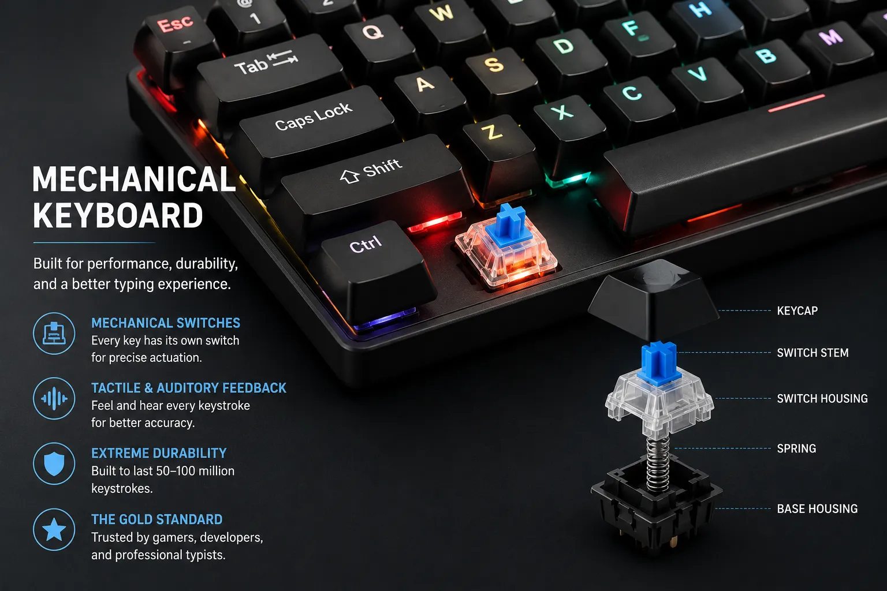
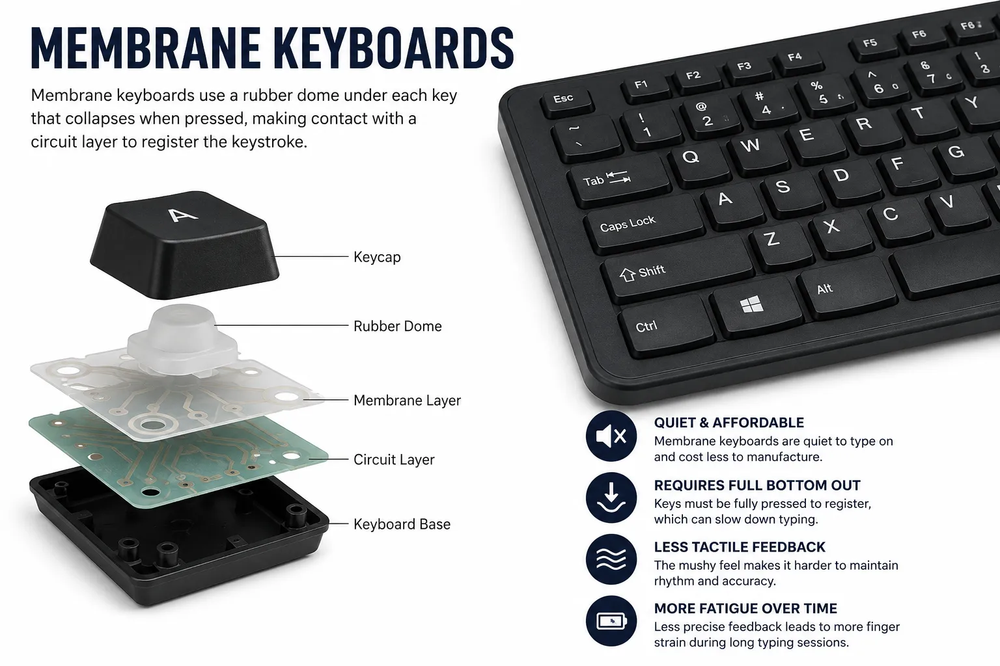
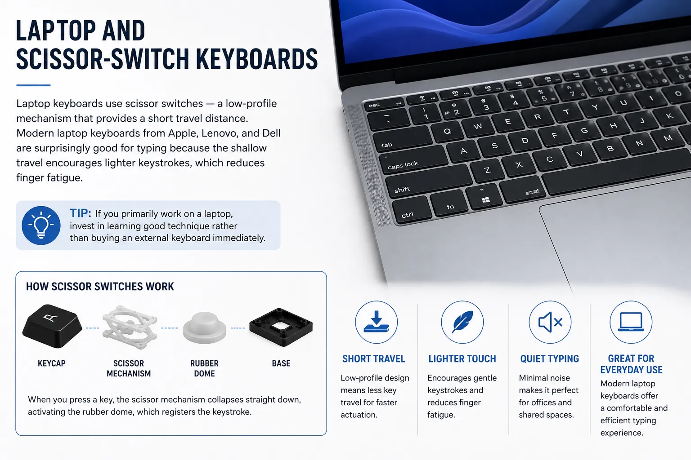
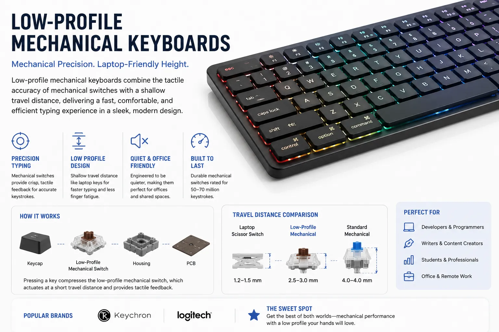
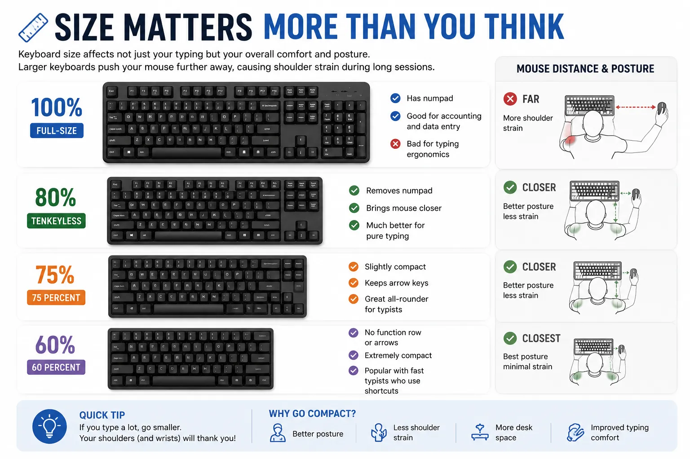
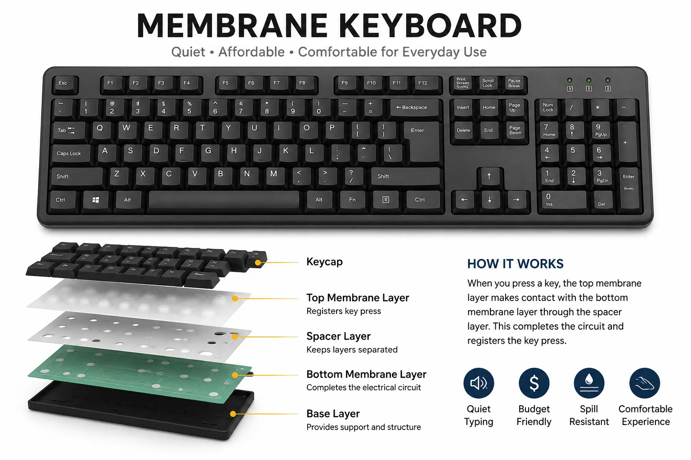
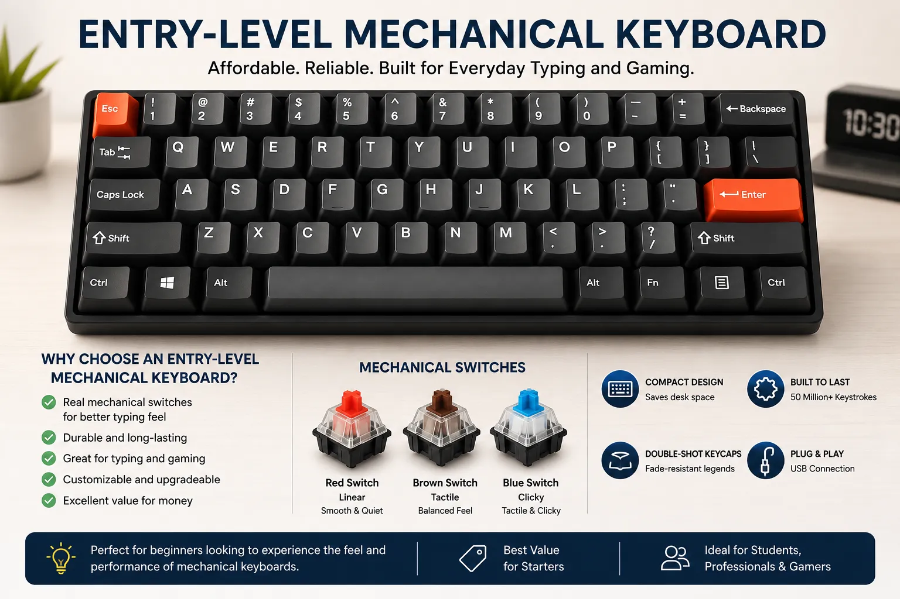
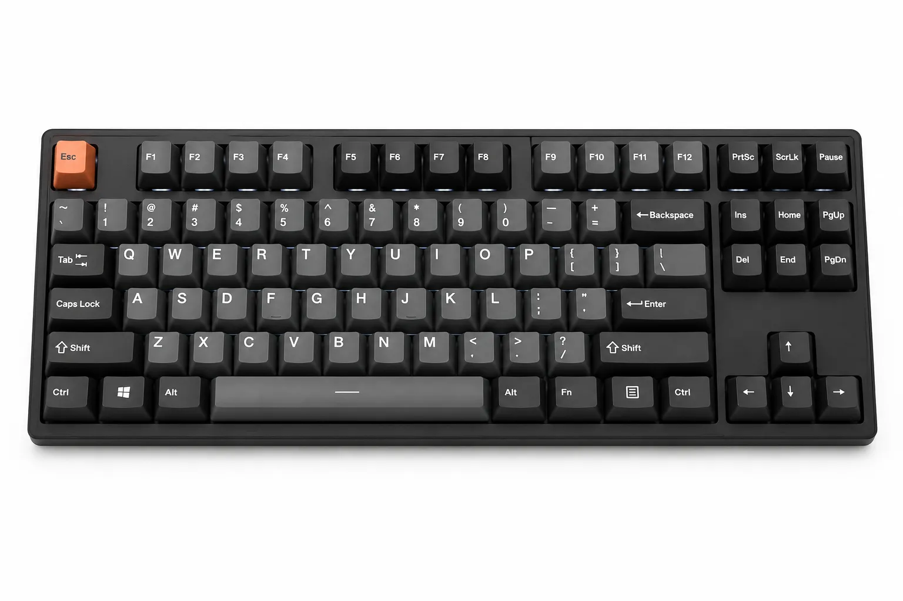

Each key has its own physical switch underneath — a spring-loaded mechanism that registers a keystroke at a precise actuation point. Mechanical keyboards give you tactile or auditory feedback with every press, which helps your brain confirm keystrokes without looking down. They last 50–100 million keystrokes, far outlasting membrane keyboards. For serious typists, mechanical is the gold standard.

Most office and bundled keyboards are membrane — a rubber dome under each key collapses when pressed. They are quiet, cheap, and fine for casual use. But membrane keyboards require you to fully bottom out every key, which is slower and causes more finger fatigue over long sessions. The mushy, imprecise feel makes it harder to develop consistent rhythm and muscle memory.

Laptop keyboards use scissor switches — a low-profile mechanism that provides a short travel distance. Modern laptop keyboards from Apple, Lenovo, and Dell are surprisingly good for typing because the shallow travel encourages lighter keystrokes, which reduces finger fatigue. If you primarily work on a laptop, invest in learning good technique rather than buying an external keyboard immediately.

A newer category that combines the precision of mechanical switches with the shallow travel of laptop keys. Brands like Keychron and Logitech make excellent low-profile mechanical keyboards that are fast, quiet enough for offices, and significantly better than membrane for serious typing. If you want a mechanical upgrade without the height, this is the sweet spot.

The switch inside each key determines how typing feels. There are three families:
| Switch Type | Feel | Sound | Best For | Speed Rating |
|---|---|---|---|---|
| Linear (Red, Speed) | Smooth, no bump | Quiet | Fast raw typing | ★★★★★ |
| Tactile (Brown, Clear) | Bump before actuation | Medium | Accuracy + speed | ★★★★☆ |
| Clicky (Blue, Green) | Bump + audible click | Loud | Accuracy, satisfaction | ★★★☆☆ |
| Membrane | Mushy, full travel | Quiet | Budget, quiet offices | ★★☆☆☆ |
Advertisement
Keyboard size affects not just your typing but your overall comfort and posture. Larger keyboards push your mouse further away, causing shoulder strain during long sessions.

Key insight: For pure typing speed, a tenkeyless or 75% mechanical keyboard with linear or tactile switches is the sweet spot. You get precision, reduced hand movement, and better ergonomics — without paying for a numpad you don't use while typing prose.

If you're under 60 WPM, your keyboard is not the bottleneck — your technique is. Learn proper finger placement, build muscle memory, and practice daily before spending money on hardware. A cheap keyboard with good technique beats an expensive keyboard with bad habits.

Once you're consistently above 50 WPM and want to push further, a budget mechanical keyboard is a worthwhile upgrade. Look for keyboards with Cherry MX Red or Brown switches — or equivalent Gateron switches which are often smoother and cheaper. The tactile feedback will help you type with lighter keypresses and better rhythm.

For typists above 80 WPM who want to go further, invest in a quality tenkeyless mechanical with a solid build. Look for hot-swap sockets so you can try different switches without soldering. PBT keycaps instead of ABS resist shine and feel better after months of heavy use. At this level, the keyboard starts to genuinely matter.
Best Keyboards for Fast Typing in 2026 is a key part of better typing. This article gives you practical insights, real-world examples, and clear steps so you can use the right techniques and tools for faster, more accurate typing.
No matter what keyboard you're on, find out your current WPM with a free typing test. Your baseline score today is the number you'll beat tomorrow.
Start Typing Test →Click anywhere outside the image, press Esc, or tap ✕ to close